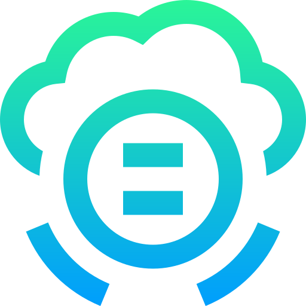
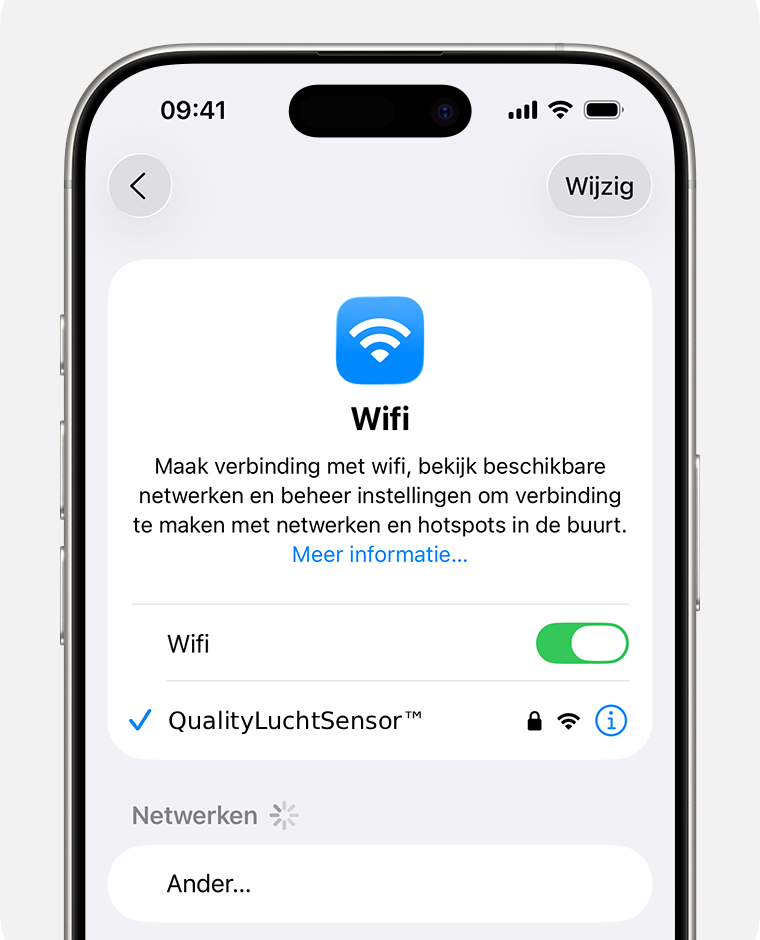
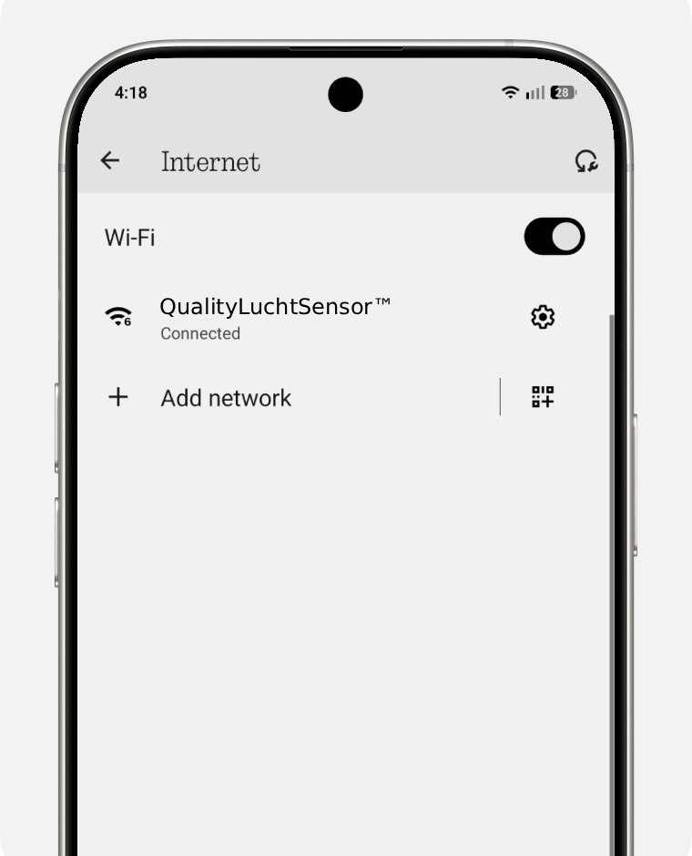

QualityLuchtSensor
Verbind met de QualityLuchtSensor
Deze captive portal werkt zonder app-installatie. Verbind alleen met het wifi-netwerk van de QualityLuchtSensor™.
Voor iPhone: Verbinding maken met een wifinetwerk

- Ga vanaf het beginscherm naar Instellingen en tik op Wifi.
- Tik om wifi in te schakelen. Je iPhone zoekt nu automatisch naar beschikbare wifinetwerken.
- Tik op de naam van het wifinetwerk van de QualityLuchtSensor. Vul indien nodig het wachtwoord in of ga akkoord met de voorwaarden.
- Controleer of er een blauw vinkje naast de netwerknaam staat en een wifi-symbool boven in beeld. Dan ben je verbonden.
Voor Android: Wifi inschakelen en verbinden

- Open de app Instellingen op je toestel.
- Tik op Netwerk en internet en daarna op Internet.
- Zet Wifi aan.
- Tik op het netwerk van de QualityLuchtSensor. Als er een slotje staat, voer je het wachtwoord in.
- Na verbinden zie je onder de netwerknaam Verbonden. Het netwerk wordt opgeslagen voor volgende keren.
Tip: Je kunt vaak ook vanaf de bovenkant omlaag vegen en op het wifi-icoon tikken om snel bij de wifi-instellingen te komen.